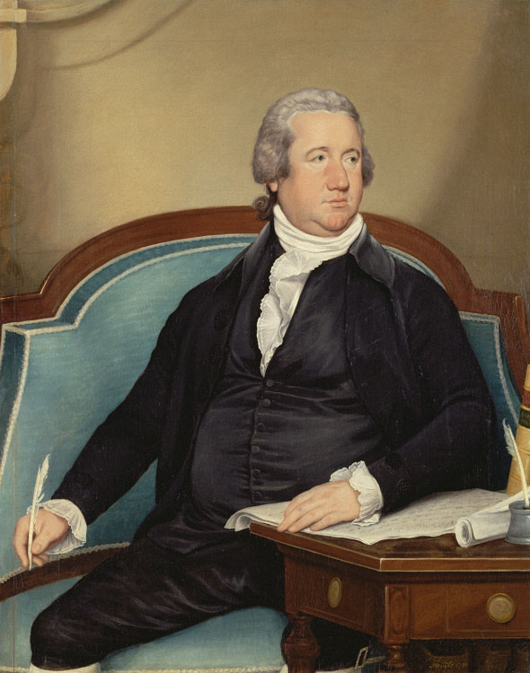

The central difference between the House and the Senate is size. There are 435 members in the House of Representatives and 100 members in the Senate. The House has a greater number of formal rules.
In the House, the Rules Committee proposes time and amendment limitations in an effort to move legislation through its larger body. They’re policy-making specialists. They deal primarily with the US budget (taxing and spending). This is clearly talked about in Article 1, Section 7 of the Constitution.
House members are elected to two-year terms and are up for election or reelection every two years. There’s no limit to the number of terms a member of the House can serve.

The person who can be considered the “leader” of the House of Representatives is known as the Speaker of the House. This person is selected by the majority party in the House and wields vast power over the agenda of the House. The Speaker controls which bills get assigned to committees (more on that later) and sets the agenda.
Each member of the House represents an individual Congressional district. These districts are roughly the same population (710,000 people per district according to a recent census). Each state gets a number of districts, and thus House members, based on population. So, California has more congressional districts than Iowa.